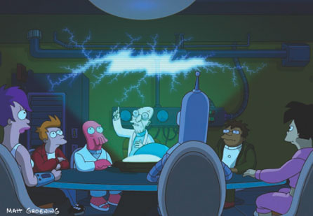

Rich Internet Applications
03.jQuery.intro
Why jQuery?

New Wave JavaScript
Why jQuery?
-
Popular library, used by big companies
- Google, Amazon, Microsoft, Dell, EA, Mozilla, Wordpress, ...
-
Works in all A-Grade Browsers
- ... and also supports IE6 and the like
-
Easy to use
- Built around CSS Selectors ... which we already use (in CSS)
- Can be used with other libraries
- Does not extend the DOM
- Lots of plugins available
- Lots of documentation/information available
How popular is jQuery Exactly?
1 in every 2 of the top 10K websites is using jQuery


jQuery is used by 44.1% of all top 10K websites
(JS market share 84.7%)
History
- June 2005:
-
August 2005:
- John Resig digs the idea of Behaviour but dislikes the syntax and notes a few shortcomings. He proposes something that eventually will become jQuery on his blog
-
January 2006:
- John Resig attended Barcamp NYC and announced jQuery
-
August 2006:
- jQuery 1.0 released
Obtaining & Including jQuery
Welcome to the world of tomorrow!
Up Front: jQuery Documentation
-
Meet your new homes:
- jQuery API — Look up functions
- jQuery Cheatsheet — Quick overview with access to the API
-
Also worth checking
- jQuery Visual Cheatsheet — Extensive cheatsheet (PDF)
- jQuery Docs — Official jQuery Wiki
- learn.jquery.com — jQuery introduction and tutorials (new)
Including jQuery (1)
-
Download jQuery from jQuery.com
- Production: minified version for live sites
- Development: raw version for testing/debugging
-
Basic page structure
<!doctype html> <html lang="en"> <head> <title>Including jQuery<</title> </head> <body> <h1>Including jQuery<</h1> <script src="assets/03/examples/jquery-1.7.1.min.js"></script> <script> $(document).ready(function() { alert('loaded'); }); </script> </body> </html>
Including jQuery (2)
-
Also possible
... <script src="assets/03/examples/jquery-1.7.1.min.js"></script> <script> $(function() { alert('loaded'); }); </script> ...
Selecting Elements
Everybody's a jerk. You, me, this jerk.
Selecting Elements
- jQuery is built around the
jQueryfunction which is mapped to$ -
Via the function you can select elements
- Just pass in a CSS3 selector to select the elements you want
(cfr.document.querySelectorAll) -
What you get returned is a jQuery wrapped Object, not the elements themselves
- eg. You can't call
.innerHTMLon it, as it's no DOM Node! - You can only call functions provided by jQuery (or one of its plugins) on it
- eg. You can't call
- Just pass in a CSS3 selector to select the elements you want
Examples (1)
-
Basic Selectors
// Selecting elements by ID $('#myId'); // Selecting elements by class name $('div.myClass'); // Selecting elements by attribute $('input[name=first_name]'); // Selecting elements by compound CSS selector $('#contents > ul.people li'); // Selecting elements using a pseudo selector $('ul li:nth-child(2)');
Examples (2)
-
jQuery has augmented the selector possibilities by adding their own extras such as
// Select all elements that are in the progress of an animation at the time the selector is run $(':animated'); // Selects all button elements and elements of type button. $(':button'); // Select all elements that have no children (including text nodes). $(':empty'); // Selects elements which contain at least one element that matches the specified selector. $('div:has(p)'); // Parent selector $('td:parent');-
Note: These selectors are slow, as they cannot be passed directly into the native — thus fast —
document.querySelector(All)
-
Note: These selectors are slow, as they cannot be passed directly into the native — thus fast —
Selectors Reference
- Full list of possible selectors on jQuery API
Iterating a selection
-
Sometimes, you'll want to iterate over a selection
$('li').each(function() { console.log($(this)); }); -
Possible to use
this, referencing the current node, inside a loop- Wrapp it inside
$()again, to get a jQuery Object
- Wrapp it inside
Manipulating Elements
Everybody loves Hypnotoad!
Manipulating Elements
-
Once you have an element / a group of elements selected, you can manipulate them
- CSS properties
- Assigned Classes
- Values & Attributes
- Add, Move, Copy & Remove Elements
CSS (1)
-
To adjust the css, make use of .css()
<h1>CSS</h1> <ul> <li>Ham</li> <li>Bread</li> <li>Banana</li> </ul> <script src="jquery-1.7.1.min.js"></script> <script> $(document).ready(function() { // Adjust properties one by one $('li').css('border', '1px solid red'); $('li').css('width', '200px'); // Adjust multiple properties $('ul li:nth-child(1)').css({ 'font-weight': 700, 'background-color': 'lime', 'width': '250px' }); }); </script> - No need to loop over the selection, jQuery is written so that it'll apply the changes to all selected elements
CSS (2)
-
jQuery allows chaining, you should make use of that
$(document).ready(function() { // Adjust properties one by one $('li').css('border', '1px solid red').css('width', '200px'); // Adjust multiple properties $('ul li:nth-child(1)').css({ 'font-weight': 700, 'background-color': 'lime', 'width': '250px' }); }); - Code is shorter, and you've saved one DOM lookup
CSS (3)
-
To read a value, omit the 2nd parameter
$(document).ready(function() { // Adjust properties one by one $('li').css('border', '1px solid red'); $('li').css('width', '200px'); // Adjust multiple properties $('ul li:nth-child(1)').css({ 'font-weight': 700, 'background-color': 'lime', 'width': '250px' }); alert($('ul li:nth-child(1)').css('width')); }); - This is true for most of the manipulation functions
CSS (4)
- jQuery provides shortcuts to working with dimensions
- No vendor prefixed needed when setting “new-ish” properties. jQuery will handle it.
Classes (1)
-
Basic manipulation: .addClass() and .removeClass()
<!doctype html> <html lang="en"> <head> <title>jQuery</title> <style> p { margin: 8px; font-size:16px; } .selected { color:blue; } .highlight { background:yellow; } </style> </head> <body> <h1>Classes</h1> <ul> <li class="selected">Ham</li> <li>Bread</li> <li class="selected">Banana</li> </ul> <script src="jquery-1.7.1.min.js"></script> <script> $(document).ready(function() { $('li:last').addClass('highlight').removeClass('selected'); }); </script> </body> </html>
Classes (2)
-
Other Functions: .toggleClass() and .hasClass()
$(document).ready(function() { $('li:last').toggleClass('highlight'); if ($('li:last').hasClass('selected')) { alert('last li has the class "selected"'); } });
HTML, Attributes & Values (1)
-
Basics: .html() (to get/set the
innerHTML) and .val() (to get/set the value of a form element)<select> <option>Single</option> <option selected="selected">Single2</option> </select> <input type="password" id="pass" value="P4SSW0RD" /> <p>(loading...)</p> <script src="jquery-1.7.1.min.js"></script> <script> $(document).ready(function() { $('#pass').val('NEWP4SSWORD'); $('p').html( 'Form choices : ' + $('select').val() + ' - ' + $('#pass').val() ); }); </script>-
.val()works with all types of inputs (and textareas!) - Again: omission of a value to set results in getting the value
-
HTML, Attributes & Values (2)
-
Getting/setting atrributes possible with .attr()
<p>Once there was a <em title="huge, gigantic">large</em> dinosaur...</p> <p id="output">(loading...)</p> <script src="jquery-1.7.1.min.js"></script> <script> $(document).ready(function() { $('#output').html('The emphasis is ' + $('em').attr('title')); }); </script>-
When working with
data-*attributes, one should use .data()
-
When working with
Add, Move, Copy & Remove Elements
-
Sidenote: Creating elements
// Creating new elements from an HTML string var p = $('<p>This is a new paragraph</p>'); var li = $('<li class="new">new list item</li>'); // Creating a new element with an attribute object var a = $('<a/>', { html : 'This is a <strong>new</strong> link', 'class' : 'new', href : 'foo.html' });
Adding Elements (1)
-
Inject content outside targeted element with .after() and .before()
<div class="container"> <h2>Greetings</h2> <p>Hello</p> <p>Goodbye</p> </div> <script src="jquery-1.7.1.min.js"></script> <script> $(document).ready(function() { $('p').after('<p>Injected After</p>'); }); </script>$(document).ready(function() { $('p').before('<p>Injected Before</p>'); });
Adding Elements (2)
-
Alternative Syntax: .insertAfter() and .insertBefore()
<div class="container"> <h2>Greetings</h2> <p>Hello</p> <p>Goodbye</p> </div> <script src="jquery-1.7.1.min.js"></script> <script> $(document).ready(function() { $('<p>Injected After</p>').insertAfter('p'); }); </script>$(document).ready(function() { $('<p>Injected Before</p>').insertBefore('p'); });- Difference with previous: target and content parameters swapped
Adding Elements (3)
- Also possible
- Important difference with previous
- Content gets injected inside the targeted element
-
Example
<ul> <li>Ham</li> <li>Bread</li> <li>Banana</li> </ul> <script src="jquery-1.7.1.min.js"></script> <script> $(document).ready(function() { $('ul').prepend('<li>Apple</li>').append('<li>Pear</li>'); }); </script>
Moving Elements
-
Example: Move last element to being the first
<ul> <li>Ham</li> <li>Bread</li> <li>Banana</li> </ul> <script src="jquery-1.7.1.min.js"></script> <script> $(document).ready(function() { $('li:last').prependTo('ul'); }); </script>
Copying Elements
-
Use .clone() to duplicate, and insert it into the HTML
<ul> <li>Ham</li> <li>Bread</li> <li>Banana</li> </ul> <script src="jquery-1.7.1.min.js"></script> <script> $(document).ready(function() { $('li:last').clone().appendTo('ul'); }); </script>
Removing Elements
Traversing

All right, which one of you sea dogs has the guts and know-how to harpoon a whale?
Traversing
-
Same analogy as regular DOM tree walking:
- parents
- children
- siblings
-
jQuery provides a truckload of functions to walking the DOM tree
- We'll highlight a few
Selecting Children (1)
-
.children(): Get the children, optionally filtered by a selector.
<ul class="level-1"> <li class="item-i">I</li> <li class="item-ii">II <ul class="level-2"> <li class="item-a">A</li> <li class="item-b">B <ul class="level-3"> <li class="item-1">1</li> <li class="item-2">2</li> <li class="item-3">3</li> </ul> </li> <li class="item-c">C</li> </ul> </li> <li class="item-iii">III</li> </ul> <script> $(document).ready(function() { $('ul.level-2').children().css('border', '1px solid red'); }); </script>
Selecting Children (2)
-
.find(): Get the descendants, filtered by a selector
<ul class="level-1"> <li class="item-i">I</li> <li class="item-ii">II <ul class="level-2"> <li class="item-a">A</li> <li class="item-b">B <ul class="level-3"> <li class="item-1">1</li> <li class="item-2">2</li> <li class="item-3">3</li> </ul> </li> <li class="item-c">C</li> </ul> </li> <li class="item-iii">III</li> </ul> <script> $(document).ready(function() { $('ul.level-2').find('li').css('border', '1px solid red'); }); </script>
Selecting Parents (1)
-
.parent(): Get the parent, optionally filtered by a selector.
<ul class="level-1"> <li class="item-i">I</li> <li class="item-ii">II <ul class="level-2"> <li class="item-a">A</li> <li class="item-b">B <ul class="level-3"> <li class="item-1">1</li> <li class="item-2">2</li> <li class="item-3">3</li> </ul> </li> <li class="item-c">C</li> </ul> </li> <li class="item-iii">III</li> </ul> <script> $(document).ready(function() { $('li.item-a').parent().css('border', '1px solid red'); }); </script>
Selecting Parents (2)
-
.parents(): Get the ancestors, optionally filtered by a selector.
<ul class="level-1"> <li class="item-i">I</li> <li class="item-ii">II <ul class="level-2"> <li class="item-a">A</li> <li class="item-b">B <ul class="level-3"> <li class="item-1">1</li> <li class="item-2">2</li> <li class="item-3">3</li> </ul> </li> <li class="item-c">C</li> </ul> </li> <li class="item-iii">III</li> </ul> <script> $(document).ready(function() { $('li.item-a').parents('ul').css('border', '1px solid red'); }); </script>
Selecting Siblings (1)
-
Select all siblings with .siblings()
<ul> <li>list item 1</li> <li>list item 2</li> <li id="third-item">list item 3</li> <li>list item 4</li> <li>list item 5</li> </ul> <script src="jquery-1.7.1.min.js"></script> <script> $(document).ready(function() { $('#third-item').siblings().css('border', '1px solid red'); }); </script>
Selecting Siblings (2)
- .next(): Get the immediately following sibling, optionally filtered by a selector.
- .prev(): Get the immediately preceding sibling, optionally filtered by a selector.
-
Example
<ul> <li>list item 1</li> <li>list item 2</li> <li id="third-item">list item 3</li> <li>list item 4</li> <li>list item 5</li> </ul> <script src="jquery-1.7.1.min.js"></script> <script> $(document).ready(function() { $('#third-item').next().css('border', '1px solid red'); $('#third-item').prev().css('border', '1px solid blue'); }); </script>
Selecting Siblings (3)
-
Chaining possible by using .end()
<ul> <li>list item 1</li> <li>list item 2</li> <li id="third-item">list item 3</li> <li>list item 4</li> <li>list item 5</li> </ul> <script src="jquery-1.7.1.min.js"></script> <script> $(document).ready(function() { $('#third-item') .next().css('border', '1px solid red') .end() .prev().css('border', '1px solid blue'); }); </script>
Events
001100010010011110100001101101110011
Events
Binding Events
-
Basic usage
<ul> <li>list item 1</li> <li>list item 2</li> <li>list item 3</li> <li>list item 4</li> <li>list item 5</li> </ul> <script src="jquery-1.7.1.min.js"></script> <script> $(document).ready(function() { $('li').css('cursor','pointer').on('mouseover', function(e) { $(this).css('color', 'blue'); }).on('mouseout', function(e) { $(this).css('color', 'black'); }).on('click', function(e) { $(this).css('color', 'red'); }); }); </script> - Even possible to inject extra data into an event handler, see the .on() API reference
Binding Events: Shorthands
-
jQuery offers shorthand methods to binding events
$(document).ready(function() { $('li').css('cursor','pointer').hover( function(e) { $(this).css('color', 'blue'); }, function(e) { $(this).css('color', 'black'); } ).click(function(e) { $(this).css('color', 'red'); }); }); - We will use .on() and .off() though
Binding Events: Alternate Syntax
-
In older jQuery versions .bind() and .unbind() were used
$(document).ready(function() { $('li').css('cursor','pointer').bind('mouseover', function(e) { $(this).css('color', 'blue'); }).bind('mouseout', function(e) { $(this).css('color', 'black'); }).bind('click', function(e) { $(this).css('color', 'red'); }); }); </script> - Again, we will use .on() and .off()
The eventObject
- The jQuery eventObject is a normalized event object according to W3C Specifications through all browsers
-
It works in the same manner as the W3C Event Object
- Call
event#targetto get to know what was clicked - Call
event#preventDefaultto prevent the default action - Call
event#stopPropagationto stop bubbling of the event
- Call
Binding events on future nodes (1)
-
When binding event handlers with .on() or .bind() they'll only be hooked to the currently existing elements
$(document).ready(function() { // Bind Events $('li').css('cursor','pointer').on('mouseover', function(e) { $(this).css('color', 'blue'); }).on('mouseout', function(e) { $(this).css('color', 'black'); }).on('click', function(e) { $(this).css('color', 'red'); }); // Append new list item $('ul').append('<li>new list item, injected after the event binding</li>'); }); - Can be fixed by using .delegate()
.delegate
-
Example
$(document).ready(function() { // Bind Events, using delegate $('ul').delegate('li', 'mouseover', function(e) { $(this).css('color', 'blue'); }).delegate('li', 'mouseout', function(e) { $(this).css('color', 'black'); }).delegate('li', 'click', function(e) { $(this).css('color', 'red'); }).css('cursor','pointer'); // Append new list item $('ul').append('<li>new list item, injected after the event binding</li>'); });
.delegate alternative (deprecated)
-
Older versions of jQuery used .live() instead of .delegate()
$(document).ready(function() { // Bind events, using live (not recommended!) $('ul li').live('mouseover', function(e) { $(this).css('color', 'blue'); }).live('mouseout', function(e) { $(this).css('color', 'black'); }).live('click', function(e) { $(this).css('color', 'red'); }).css('cursor','pointer'); // Append new list item $('ul').append('<li>new list item, injected after the event binding</li>'); });- Works, but performance is slow and doesn't play nice when traversing
- Recommended read: Why You Should Never Use jQuery Live
- We will use .delegate()
Events Summary
- Use .on() and .off() to bind event handlers
- Use .delegate() to bind event handlers if you know the DOM will change
- All other syntaxes work, but we won't be writing them ourselves
Effects/Animation
Animation Core Function
-
jQuery lets you animate elements (viz. adjust CSS properties in an animated manner) via its core .animate() function.
<button id="go">Run</button> <div id="block" style="background-color:#bca; width:100px; border:1px solid green;">Hello!</div> <script src="jquery-1.7.1.min.js"></script> <script> $(document).ready(function() { $('#go').on('click', function() { $('#block').animate({ width: '70%', opacity: 0.4, marginLeft: '40px', fontSize: '3em', borderWidth: '10px' }, 1500 ); }); }); </script>
Animation Shorthands
-
jQuery also provides quite a few shorthands for some basic effects, including:
- .fadeIn(): Display the matched elements by fading them to opaque.
- .fadeOut(): Hide the matched elements by fading them to transparent.
- .hide(): Hide the matched elements.
- .show(): Display the matched elements.
- .slideDown(): Display the matched elements with a sliding motion.
- .slideUp(): Hide the matched elements with a sliding motion.
Animation Stuff you should know
-
Animations are queued one after the other. Possible to interfere with
- .queue(): Show the queue of functions to be executed on the matched elements.
- .dequeue(): Execute the next function on the queue for the matched elements.
- .clearQueue(): Remove from the queue all items that have not yet been run.
- Possible to stop and delay animations using .stop() and .delay()
jQuery Core Functions

jQuery Core Functions
-
jQuery also provides a few utility functions, including
-
$.trim: Remove whitespace from a String
$.trim(' lots of extra whitespace '); -
$.each: Iterate over Arrays and Objects
$.each([ 'foo', 'bar', 'baz' ], function(idx, val) { console.log('element ' + idx + 'is ' + val); }); $.each({ foo : 'bar', baz : 'bim' }, function(k, v) { console.log(k + ' : ' + v); }); -
$.inArray: Get index for element inside an Array
$.inArray(4, [ 1, 2, 3, 4, 5 ]); // 3 -
$.extend: Merge the contents of two or more objects together into the first object
$.extend({}, object1, object2);
-
$.trim: Remove whitespace from a String
$.extend use case
-
Commonly used to allow defaults in functions & plugins
<p>(loading...)</p> <script src="jquery-1.7.1.min.js"></script> <script> $(document).ready(function() { var defaults = { 'color' : 'lime', 'font-size' : '15px', 'font-weight' : '700', 'font-family' : 'verdana' } var write = function(what, options) { var cssSettings = $.extend({}, defaults, options); $('p').css(cssSettings).html(what); } write('This will not be lime', {'color':'blue'}); }); </script>
Other Utility Functions/Objects
- Basic checking functions such as
- $.browser provides information about the browser
Questions?
Sources
- Most Futurama Screengrabs: IGN.com
- jQuery popularity: Infragistics
- jQuery History: jquery.com
- jQuery Basics: jqfundamentals.com & learn.jquery.com
- jQuery Manipulating: learn.jquery.com & learn.jquery.com
- jQuery Traversing: learn.jquery.com & jQuery API
- Delegate/Undelegate: learn.jquery.com
- Event Object: jQuery API
- jQuery Core: learn.jquery.com